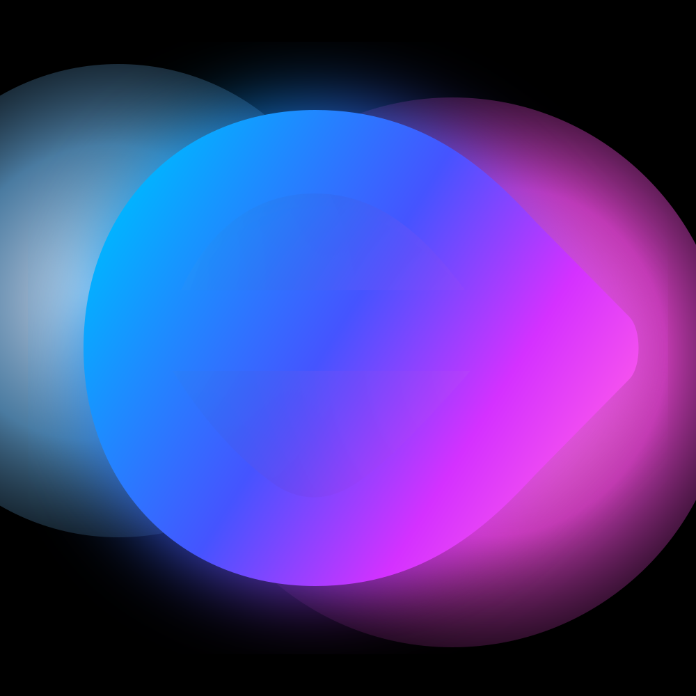

Available now
- Hosted Ekstra sandbox for evaluation and prototyping
- `web-phone-pointer` starter with phone browser control
- Public docs, GitHub wiki, and Pages site
- `@ekstra/controls-web` package scaffold with ten profile definitions

Ekstra gives developers a motion runtime, browser integration path, and reusable control profiles for products controlled by phones and other motion sources.
Ekstra is not just a static library. The runtime is a set of services:
motiond, ws_bridge, phone_imu_provider,
and a browser-facing frontdoor.
The current public sandbox is intended for evaluation and prototype work. It is the fastest path for developers who want to integrate Ekstra without first operating the runtime themselves.
Follow the public build surface and launch updates through the official community channels.
For starter bugs, doc gaps, and integration questions, use the public repo support surface first.